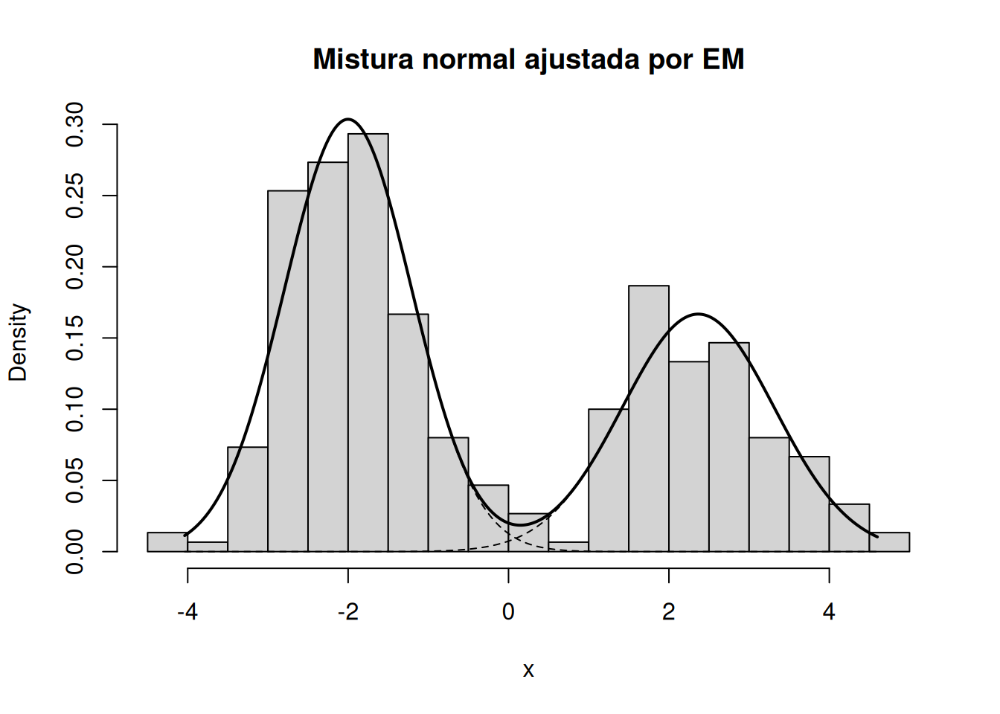
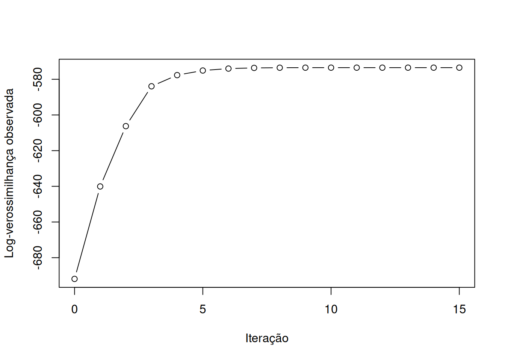

em_generico <- function(theta0, e_step, m_step, loglik,
tol = 1e-8, maxit = 1000) {
theta <- theta0
ll_old <- loglik(theta)
historico <- ll_old
for (iter in seq_len(maxit)) {
# Etapa E
estatisticas_esperadas <- e_step(theta)
# Etapa M
theta_new <- m_step(estatisticas_esperadas)
# Log-verossimilhança observada
ll_new <- loglik(theta_new)
historico <- c(historico, ll_new)
# Diagnóstico de monotonicidade
if (ll_new < ll_old - 1e-10) {
warning("A log-verossimilhanca diminuiu.")
}
# Critério relativo de parada
erro <- abs(ll_new - ll_old) / (1 + abs(ll_new))
theta <- theta_new
if (erro < tol) {
return(list(
par = theta,
logLik = ll_new,
iter = iter,
convergiu = TRUE,
historico = historico
))
}
ll_old <- ll_new
}
list(
par = theta,
logLik = tail(historico, 1),
iter = maxit,
convergiu = FALSE,
historico = historico
)
}7 Algoritmo EM: máxima verossimilhança com dados incompletos e variáveis latentes
O algoritmo EM (Expectation-Maximization) é um procedimento iterativo para problemas de estimação por máxima verossimilhança nos quais a formulação estatística se torna mais simples se os dados observados forem ampliados por valores ausentes, censurados, não observáveis ou por variáveis latentes. Em vez de maximizar diretamente uma verossimilhança observada potencialmente complicada, o método alterna entre a construção de uma esperança condicional da log-verossimilhança de dados completos e a maximização dessa quantidade em relação aos parâmetros.
Base bibliográfica: a formulação geral deste capítulo segue principalmente o Apêndice D.7 de Kroese; Taimre; Botev (2011) [pp. 711–714], a Seção 13.4 de Ramachandran; Tsokos (2021, pp. 540–548) e a Seção 13.8 de Chihara; Hesterberg (2022) [pp. 483–488]. As aplicações em misturas e em R são complementadas por Thulin (2025) [Seção 4.12.5, pp. 156–157; Seção 10.1.3, aproximadamente pp. 359–362] e Chernick (2008, seç. 8.3, pp. 145–148).
7.1 Objetivos de aprendizagem
Ao final deste capítulo, espera-se que o leitor seja capaz de:
- reconhecer problemas nos quais dados incompletos ou variáveis latentes sugerem uma formulação EM;
- distinguir formalmente dados observados de dados completos;
- construir as etapas E e M a partir de uma log-verossimilhança de dados completos;
- justificar a monotonicidade da log-verossimilhança observada;
- escolher critérios computacionais de parada e avaliar sensibilidade aos valores iniciais;
- implementar o EM em R e aplicá-lo a modelos de mistura;
- interpretar responsabilidades, parâmetros estimados, trajetória da log-verossimilhança e evidências de convergência problemática.
Base bibliográfica: organização didática baseada nos tópicos desenvolvidos em Kroese; Taimre; Botev (2011) [Apêndice D.7, pp. 711–714], Ramachandran; Tsokos (2021, seç. 13.4, pp. 540–548) e Chihara; Hesterberg (2022, seç. 13.8, pp. 483–488).
7.2 Problemas estatísticos envolvendo informações incompletas e variáveis latentes
Muitos problemas de inferência podem ser descritos por um modelo probabilístico simples para uma informação que, conceitualmente, seria completa, mas que não é integralmente observada. Há pelo menos duas situações importantes.
A primeira ocorre quando parte dos dados existe conceitualmente, mas não é observada. Isso inclui valores ausentes e observações censuradas. Ramachandran; Tsokos (2021, seç. 13.4, pp. 540–544) usa como motivação estudos de sobrevivência nos quais alguns tempos de falha são observados exatamente, enquanto para outras unidades sabe-se apenas que o tempo de vida excedeu um limite de censura. O mesmo texto também apresenta a ausência de respostas em levantamentos como exemplo de informação incompleta.
A segunda ocorre quando o próprio modelo introduz uma estrutura latente. Em uma mistura finita de distribuições, por exemplo, cada observação é gerada por uma de várias componentes, mas o rótulo da componente que gerou cada valor não é observado. A introdução desses rótulos transforma a verossimilhança da mistura em uma forma de dados completos consideravelmente mais simples. Essa estratégia de aumentar os dados com variáveis auxiliares ou latentes é destacada por Kroese; Taimre; Botev (2011, seç. 6.3.5 e Apêndice D.7, especialmente pp. 259–260 e 711–714).
Definição
Chamaremos de informação incompleta uma situação em que a verossimilhança observada resulta da marginalização de uma informação adicional não observada. Essa informação adicional pode corresponder a valores realmente ausentes, tempos censurados, rótulos de componentes de uma mistura ou outras variáveis latentes introduzidas para facilitar a computação.
Base bibliográfica: Ramachandran; Tsokos (2021) [Seção 13.4, pp. 540–541] e Kroese; Taimre; Botev (2011) [Seção 6.3.5, pp. 259–260; Apêndice D.7, pp. 711–712].
Interpretação
O ponto central não é apenas que existam dados faltantes. O EM é especialmente útil quando imaginar os dados completos torna a maximização mais fácil. Em uma mistura normal, por exemplo, a dificuldade da soma dentro da log-verossimilhança observada é substituída por uma log-verossimilhança completa na qual os rótulos latentes aparecem como indicadores.
Base bibliográfica: Kroese; Taimre; Botev (2011, Apêndice D.7, pp. 711–714).
Exemplo: censura em tempos de sobrevivência
Considere tempos de sobrevivência com distribuição exponencial de média \(\theta\). Para algumas unidades observa-se o tempo de falha; para outras, sabe-se apenas que sobreviveram além de um tempo de censura \(T\). Os tempos reais das unidades censuradas podem ser tratados como dados não observados. Ramachandran; Tsokos (2021, Exemplo 13.4.1, pp. 542–544) mostra que essa formulação conduz a uma etapa E simples, pois, sob a distribuição exponencial,
\[E(Y \mid Y>T,\theta^{(t)})=T+\theta^{(t)}.\]
Esse resultado fornece a quantidade que substitui os tempos não observados na esperança da log-verossimilhança completa.
Base bibliográfica: exemplo adaptado de Ramachandran; Tsokos (2021, Exemplo 13.4.1, pp. 542–544).
7.3 Dados observados e dados completos
Seja \(Y\) o vetor de dados efetivamente observados e seja \(Z\) um vetor de valores ausentes ou variáveis latentes. O vetor
\[X_c=(Y,Z)\]
será chamado de dado completo. Seja \(\theta\in\Theta\) o vetor de parâmetros do modelo.
A densidade ou função de massa do dado completo será denotada por
\[p(y,z\mid\theta),\]
e a verossimilhança observada é obtida por marginalização:
\[L(\theta;y) = p(y\mid\theta) = \int p(y,z\mid\theta)\,dz,\]
quando \(Z\) é contínua, ou pela soma correspondente quando \(Z\) é discreta. A log-verossimilhança observada é
\[\ell(\theta;y)=\log p(y\mid\theta),\]
enquanto a log-verossimilhança de dados completos é
\[\ell_c(\theta;y,z)=\log p(y,z\mid\theta).\]
Base bibliográfica: Kroese; Taimre; Botev (2011) [Apêndice D.7, pp. 711–712], Ramachandran; Tsokos (2021, seç. 13.4, pp. 540–541) e Chihara; Hesterberg (2022, seç. 13.8.1, pp. 485–488).
Definição
A distinção entre dados observados e dados completos é relativa à modelagem. O dado completo é uma construção que inclui tudo aquilo que tornaria a inferência mais simples: os valores observados mais a informação não observada necessária para obter uma forma conveniente da verossimilhança.
Base bibliográfica: Chihara; Hesterberg (2022) [Seção 13.8.1, pp. 485–488] e Kroese; Taimre; Botev (2011, p. 712).
Interpretação
A variável latente \(Z\) não precisa representar uma quantidade fisicamente mensurável. Ela pode ser introduzida apenas como dispositivo computacional. Em modelos de mistura, porém, há uma interpretação natural: \(Z_i\) identifica a componente da mistura associada à observação \(Y_i\).
Base bibliográfica: Kroese; Taimre; Botev (2011) [Seção 6.3.5, pp. 259–260; Exemplo D.1, pp. 713–714].
7.4 Estrutura geral do algoritmo EM
Considere uma aproximação corrente \(\theta^{(t)}\). O algoritmo EM constrói a função
\[Q(\theta\mid\theta^{(t)}) = E_{\theta^{(t)}}\left[ \ell_c(\theta;Y,Z) \mid Y=y \right].\]
A esperança é calculada em relação à distribuição condicional de \(Z\) dado o dado observado \(Y=y\), usando os parâmetros correntes \(\theta^{(t)}\).
A iteração é então formada por duas operações:
\[\boxed{ \text{E: } Q(\theta\mid\theta^{(t)}) = E\left[ \ell_c(\theta;Y,Z) \mid Y=y,\theta^{(t)} \right] }\]
e
\[\boxed{ \text{M: } \theta^{(t+1)} = \arg\max_{\theta\in\Theta} Q(\theta\mid\theta^{(t)}) }.\]
Base bibliográfica: Ramachandran; Tsokos (2021) [Seção 13.4, pp. 541–542], Kroese; Taimre; Botev (2011, Algoritmo D.3, pp. 712–713) e Chihara; Hesterberg (2022, seç. 13.8.1, pp. 485–488).
Algoritmo EM
- Escolha um valor inicial \(\theta^{(0)}\).
- Para \(t=0,1,2,\ldots\):
- Etapa E: calcule \(Q(\theta\mid\theta^{(t)})\).
- Etapa M: determine \(\theta^{(t+1)}\) que maximiza \(Q(\theta\mid\theta^{(t)})\).
- calcule a log-verossimilhança observada \(\ell(\theta^{(t+1)};y)\);
- verifique um critério de parada.
- Retorne a última estimativa, a trajetória da log-verossimilhança e, quando pertinente, as esperanças ou probabilidades condicionais calculadas na etapa E.
Base bibliográfica: Kroese; Taimre; Botev (2011) [Algoritmo D.3, pp. 712–713] e Ramachandran; Tsokos (2021, pp. 541–542).
A escolha da variável latente é parte essencial da construção do algoritmo. O objetivo é obter uma representação de dados completos cuja esperança condicional seja calculável e cuja maximização seja substancialmente mais simples que a maximização direta de \(\ell(\theta;y)\).
Base bibliográfica: Kroese; Taimre; Botev (2011, p. 712).
7.5 Etapa da esperança (E)
Na etapa E, os parâmetros são mantidos em \(\theta^{(t)}\) apenas para definir a distribuição condicional da parte não observada. Em seguida, calcula-se
\[Q(\theta\mid\theta^{(t)}) = \int \ell_c(\theta;y,z) p(z\mid y,\theta^{(t)})\,dz.\]
É importante distinguir os papéis de \(\theta\) e \(\theta^{(t)}\): o primeiro continua sendo o argumento que será maximizado na etapa M, enquanto o segundo é usado para formar a distribuição condicional que determina a esperança.
Base bibliográfica: Ramachandran; Tsokos (2021) [p. 541] enfatiza explicitamente essa distinção; a mesma construção aparece em Kroese; Taimre; Botev (2011, Eq. D.16, pp. 712–713).
Interpretação
A etapa E não precisa produzir uma imputação única dos valores ausentes. Em geral, ela produz esperanças de funções do dado completo. Em modelos de mistura, por exemplo, não se substitui necessariamente cada rótulo por uma classe definitiva; calculam-se probabilidades condicionais de pertencimento a cada componente.
Base bibliográfica: Kroese; Taimre; Botev (2011) [Exemplo D.1, pp. 713–714] e Chihara; Hesterberg (2022, seç. 13.8.1, pp. 485–488).
7.5.1 Responsabilidades em uma mistura finita
Considere
\[f(y_i\mid\theta) = \sum_{k=1}^K \pi_k f_k(y_i\mid\eta_k),\]
com \(\pi_k\geq 0\) e \(\sum_{k=1}^K\pi_k=1\). Introduza indicadores latentes
\[Z_{ik} = \begin{cases} 1, & \text{se }y_i\text{ foi gerado pela componente }k,\\ 0, & \text{caso contrário.} \end{cases}\]
Na etapa E, calcula-se
\[\tau_{ik}^{(t)} = E(Z_{ik}\mid y_i,\theta^{(t)}) = P(Z_{ik}=1\mid y_i,\theta^{(t)}),\]
com
\[\tau_{ik}^{(t)} = \frac{ \pi_k^{(t)} f_k(y_i\mid\eta_k^{(t)}) }{ \sum_{j=1}^K \pi_j^{(t)} f_j(y_i\mid\eta_j^{(t)}) }.\]
Essas quantidades são frequentemente chamadas de responsabilidades: elas medem quanto cada componente contribui, sob os parâmetros correntes, para explicar cada observação.
Base bibliográfica: a fórmula corresponde às probabilidades condicionais apresentadas no Exemplo D.1 de Kroese; Taimre; Botev (2011) [pp. 713–714] e às probabilidades a posteriori usadas na discussão de misturas em Chernick (2008, pp. 145–148).
7.6 Etapa da maximização (M)
Depois de obter \(Q(\theta\mid\theta^{(t)})\), a etapa M calcula
\[\theta^{(t+1)} = \arg\max_{\theta\in\Theta} Q(\theta\mid\theta^{(t)}).\]
A vantagem do EM depende de essa maximização ser mais simples que a maximização direta da verossimilhança observada. Em famílias exponenciais, a log-verossimilhança completa frequentemente depende dos dados por estatísticas suficientes simples. Nesse caso, a etapa E calcula esperanças condicionais dessas estatísticas e a etapa M reutiliza a forma das estimativas de máxima verossimilhança dos dados completos.
Base bibliográfica: Ramachandran; Tsokos (2021) [pp. 541–542] e Kroese; Taimre; Botev (2011, p. 713).
Definição
O EM clássico exige uma maximização completa de \(Q\) na etapa M. Variantes nas quais apenas se aumenta \(Q\) sem necessariamente atingir seu máximo pertencem a uma família mais ampla de métodos de maximização generalizada; essa extensão não é desenvolvida aqui.
Base bibliográfica para o EM clássico: Kroese; Taimre; Botev (2011, Algoritmo D.3, pp. 712–713).
7.6.1 Etapa M para uma mistura normal univariada
Suponha
\[Y_i\sim \sum_{k=1}^K \pi_k\,N(\mu_k,\sigma_k^2).\]
Dadas as responsabilidades \(\tau_{ik}^{(t)}\), defina
\[N_k^{(t)}=\sum_{i=1}^n\tau_{ik}^{(t)}.\]
A maximização da esperança da log-verossimilhança completa fornece
\[\pi_k^{(t+1)} = \frac{N_k^{(t)}}{n},\]
\[\mu_k^{(t+1)} = \frac{ \sum_{i=1}^n \tau_{ik}^{(t)}y_i }{ N_k^{(t)} },\]
e
\[(\sigma_k^2)^{(t+1)} = \frac{ \sum_{i=1}^n \tau_{ik}^{(t)} \left(y_i-\mu_k^{(t+1)}\right)^2 }{ N_k^{(t)} }.\]
Base bibliográfica: Kroese; Taimre; Botev (2011, Exemplo D.1, Eqs. D.17–D.18, pp. 713–714).
7.7 Propriedade de monotonicidade da log-verossimilhança
Uma propriedade central do EM é que a log-verossimilhança observada não diminui de uma iteração para a seguinte, desde que as etapas E e M sejam realizadas corretamente.
Para mostrar essa propriedade, introduza uma densidade arbitrária \(q(z)\) e defina o limitante
\[\mathcal{L}(q,\theta) = \int q(z) \log \frac{ p(y,z\mid\theta) }{ q(z) }\,dz.\]
A identidade usada por Kroese; Taimre; Botev (2011, Eq. D.15, pp. 712–713) pode ser escrita como
\[\ell(\theta;y) = \mathcal{L}(q,\theta) + D_{\mathrm{KL}} \left( q(z) \,\Vert\, p(z\mid y,\theta) \right),\]
onde
\[D_{\mathrm{KL}}(q\Vert p)\geq 0.\]
Portanto,
\[\ell(\theta;y)\geq\mathcal{L}(q,\theta).\]
Na etapa E, toma-se
\[q_t(z)=p(z\mid y,\theta^{(t)}),\]
e o limitante torna-se exato no ponto corrente:
\[\ell(\theta^{(t)};y) = \mathcal{L}(q_t,\theta^{(t)}).\]
Na etapa M,
\[\mathcal{L}(q_t,\theta^{(t+1)}) \geq \mathcal{L}(q_t,\theta^{(t)}).\]
Finalmente,
\[\ell(\theta^{(t+1)};y) \geq \mathcal{L}(q_t,\theta^{(t+1)}) \geq \mathcal{L}(q_t,\theta^{(t)}) = \ell(\theta^{(t)};y).\]
Logo,
\[\boxed{ \ell(\theta^{(t+1)};y) \geq \ell(\theta^{(t)};y) }.\]
Base bibliográfica: demonstração organizada a partir da identidade e do argumento de limite inferior em Kroese; Taimre; Botev (2011) [Eq. D.15 e Algoritmo D.3, pp. 712–713]. Ramachandran; Tsokos (2021, pp. 541–542) também afirma a propriedade de não decréscimo da verossimilhança ao longo das iterações.
Interpretação
A monotonicidade fornece um diagnóstico computacional importante. Se uma implementação do EM produz uma queda substantiva da log-verossimilhança observada entre duas iterações, deve-se suspeitar de erro na etapa E, na etapa M ou na avaliação numérica da função objetivo.
Base bibliográfica: Kroese; Taimre; Botev (2011, p. 713).
Observação
Monotonicidade não significa convergência para o máximo global. A sequência pode convergir para um máximo local ou para outro ponto estacionário permitido pelas condições do problema. Portanto, “a log-verossimilhança sempre aumentou” é uma verificação necessária da implementação, mas não certifica que a melhor solução global foi encontrada.
Base bibliográfica: Kroese; Taimre; Botev (2011) [p. 713] e a distinção geral entre soluções locais e globais em Nocedal; Wright (2006) [Capítulo 1, pp. 6–9; Seção 2.1, pp. 12–16].
7.8 Critérios de convergência
Na prática, a sequência EM é interrompida quando a melhora entre iterações se torna pequena. Um critério baseado na log-verossimilhança é
\[\left| \ell(\theta^{(t+1)};y) - \ell(\theta^{(t)};y) \right| < \varepsilon.\]
Uma versão relativa, mais adequada quando a escala da log-verossimilhança é grande, é
\[\frac{ \left| \ell(\theta^{(t+1)};y) - \ell(\theta^{(t)};y) \right| }{ 1+ \left| \ell(\theta^{(t+1)};y) \right| } < \varepsilon.\]
Outro critério possível monitora diretamente os parâmetros:
\[\left\| \theta^{(t+1)} - \theta^{(t)} \right\| < \varepsilon_\theta.\]
Ramachandran; Tsokos (2021) [pp. 541–542] discute tanto a diferença entre valores sucessivos da verossimilhança quanto a distância entre vetores de parâmetros. Kroese; Taimre; Botev (2011, Algoritmo D.3, p. 713) apresenta um critério relativo baseado na verossimilhança. Em aplicações reais, é recomendável também impor um número máximo de iterações, pois uma tolerância muito estrita pode produzir uma execução longa sem alteração relevante para a interpretação.
Base bibliográfica: Ramachandran; Tsokos (2021) [pp. 541–542], Kroese; Taimre; Botev (2011, p. 713) e, para a importância operacional de
maxiter, Thulin (2025, seç. 10.1.3, aproximadamente pp. 360–362).
Observação computacional
O uso simultâneo de tolerância de log-verossimilhança, tolerância de parâmetros e limite máximo de iterações é uma recomendação de implementação adotada neste capítulo.
7.9 Sensibilidade aos valores iniciais
O EM exige um valor inicial \(\theta^{(0)}\). Em problemas simples, uma escolha heurística pode ser suficiente. Ramachandran; Tsokos (2021, p. 541) sugere, por exemplo, usar estatísticas calculadas com a parte observada dos dados quando isso fizer sentido.
Em problemas multimodais, contudo, a solução final pode depender fortemente do ponto inicial. Kroese; Taimre; Botev (2011) [p. 713] observa que a convergência a um máximo global depende dos valores iniciais e recomenda, na prática, execuções com diferentes pontos iniciais aleatórios. Thulin (2025, seç. 10.1.3, aproximadamente pp. 360–362) mostra essa dificuldade em análise de classes latentes com poLCA: atribuições iniciais desfavoráveis podem impedir que o procedimento encontre uma solução satisfatória, e a execução com múltiplas inicializações (nrep) é apresentada como estratégia prática.
Interpretação
Uma única execução do EM informa: “a partir deste ponto inicial, o algoritmo chegou a esta solução”. Várias execuções permitem avaliar se diferentes regiões do espaço de parâmetros conduzem ao mesmo valor final da log-verossimilhança.
Base bibliográfica: Kroese; Taimre; Botev (2011) [p. 713] e Thulin (2025, seç. 10.1.3, aproximadamente pp. 360–362).
Uma estratégia simples para misturas é inicializar as médias a partir de quantis distintos ou de uma partição preliminar dos dados e repetir o ajuste com perturbações aleatórias.
Base bibliográfica para a necessidade de múltiplas inicializações: Kroese; Taimre; Botev (2011) [p. 713] e Thulin (2025, pp. 360–362).
7.10 Máximos locais e limitações computacionais
A função de verossimilhança pode ser multimodal. O EM preserva a monotonicidade, mas não possui, em geral, uma propriedade que force a sequência a atingir o melhor máximo global. Kroese; Taimre; Botev (2011) [p. 713] afirma que, sob condições de continuidade, a convergência a um máximo local pode ser estabelecida, enquanto a obtenção de um máximo global depende dos valores iniciais. Essa distinção é consistente com a separação entre soluções locais e globais discutida no contexto geral de otimização por Nocedal; Wright (2006, cap. 1, pp. 6–9).
Além da multimodalidade, há três limitações práticas importantes.
Primeiro, a etapa E pode ser difícil. Ela exige uma esperança condicional que nem sempre possui forma analítica simples. Ramachandran; Tsokos (2021, p. 548 e discussão subsequente) menciona o Monte Carlo EM (MCEM) como alternativa quando essa esperança precisa ser aproximada por simulação.
Segundo, a etapa M pode continuar sendo um problema de otimização não trivial. A vantagem do EM é maior quando a estrutura de dados completos pertence a uma família que produz maximizações simples, em particular em diversos casos de famílias exponenciais. Isso é observado por Kroese; Taimre; Botev (2011) [p. 713] e Ramachandran; Tsokos (2021, pp. 541–542).
Terceiro, modelos de mistura apresentam questões de identificabilidade por permutação dos rótulos. Se duas componentes pertencem à mesma família paramétrica, permutar seus índices não altera a distribuição da mistura. Chernick (2008, pp. 145–148) discute essa ambiguidade e a necessidade de alguma convenção de ordenação quando se deseja identificar os componentes de forma única.
Observação
Em uma mistura, duas soluções que diferem apenas pela troca dos rótulos das componentes podem representar exatamente o mesmo modelo estatístico. Portanto, comparar vetores de parâmetros de duas execuções exige primeiro alinhar os rótulos.
Base bibliográfica: Chernick (2008, seç. 8.3, pp. 145–148).
Observação
Atingir o número máximo de iterações sem satisfazer o critério de parada deve ser tratado como sinal de ajuste incompleto. Thulin (2025, seç. 10.1.3, aproximadamente pp. 360–362) ilustra esse problema com o aviso de que a máxima verossimilhança não foi encontrada em um ajuste de classes latentes e mostra o uso de maior maxiter e de múltiplas repetições.
Base bibliográfica: Thulin (2025, seç. 10.1.3, aproximadamente pp. 360–362).
7.11 Implementação do algoritmo EM em R
7.11.1 Estrutura computacional genérica
Uma implementação conceitual pode ser organizada como segue.
Base bibliográfica: estrutura algorítmica baseada em Kroese; Taimre; Botev (2011) [Algoritmo D.3, pp. 712–713] e Ramachandran; Tsokos (2021, pp. 541–542).
7.11.2 Exemplo em R: normal com valores ausentes
Ramachandran; Tsokos (2021) apresenta uma implementação em R do EM para estimação da média e da variância de uma normal com valores ausentes no Exemplo 13.7.4. A implementação abaixo mantém a mesma ideia matemática, mas reorganiza o código para retornar também o histórico das iterações.
Se \(Y_1,\ldots,Y_r\) são observados e há \(n-r\) valores ausentes, para uma distribuição \(N(\mu,\sigma^2)\) temos
\[E(Y_{\mathrm{mis}}\mid \mu^{(t)},\sigma^{2(t)}) = \mu^{(t)}\]
e
\[E(Y_{\mathrm{mis}}^2\mid \mu^{(t)},\sigma^{2(t)}) = (\mu^{(t)})^2+\sigma^{2(t)}.\]
Logo, as estatísticas suficientes completas podem ser substituídas por suas esperanças condicionais.
Base bibliográfica: Ramachandran; Tsokos (2021) [Exercício 13.4.2, p. 548; Exemplo computacional 13.7.4, p. 564 e continuação].
em_normal_missing <- function(y,
mu0 = mean(y, na.rm = TRUE),
sigma20 = var(y, na.rm = TRUE),
tol = 1e-8,
maxit = 1000) {
y_obs <- y[!is.na(y)]
n <- length(y)
r <- length(y_obs)
m <- n - r
mu <- mu0
sigma2 <- sigma20
hist <- data.frame(
iter = 0,
mu = mu,
sigma2 = sigma2
)
for (iter in seq_len(maxit)) {
# E-step: esperanças das estatísticas suficientes completas
EY_sum <- sum(y_obs) + m * mu
EY2_sum <- sum(y_obs^2) + m * (mu^2 + sigma2)
# M-step
mu_new <- EY_sum / n
sigma2_new <- EY2_sum / n - mu_new^2
hist <- rbind(
hist,
data.frame(
iter = iter,
mu = mu_new,
sigma2 = sigma2_new
)
)
erro <- max(
abs(mu_new - mu),
abs(sigma2_new - sigma2)
)
mu <- mu_new
sigma2 <- sigma2_new
if (erro < tol) break
}
list(
mu = mu,
sigma2 = sigma2,
iter = iter,
convergiu = erro < tol,
historico = hist
)
}
Exemplo computacional
y <- c(1.613, 1.644, 1.663, 1.732, 1.740, 1.763, 1.778,
NA, NA, NA)
ajuste <- em_normal_missing(
y,
mu0 = 1.70,
sigma20 = 0.02
)
ajuste$mu[1] 1.704714ajuste$sigma2[1] 0.003513635ajuste$iter[1] 13tail(ajuste$historico) iter mu sigma2
9 8 1.704714 0.003514716
10 9 1.704714 0.003513958
11 10 1.704714 0.003513730
12 11 1.704714 0.003513662
13 12 1.704714 0.003513641
14 13 1.704714 0.003513635O conjunto de valores observados corresponde ao exercício usado como base para o exemplo computacional de Ramachandran; Tsokos (2021, Exercício 13.4.2(c), p. 548). O código é uma reimplementação didática, e não uma transcrição literal.
7.12 Aplicação a modelos de mistura de distribuições
Modelos de mistura são uma das aplicações mais naturais do EM. Considere
\[f(y\mid\theta) = \sum_{k=1}^K \pi_k f_k(y\mid\eta_k),\]
em que \(\pi_k\) são probabilidades de mistura. A maximização direta envolve termos da forma
\[\log \left[ \sum_{k=1}^K \pi_k f_k(y_i\mid\eta_k) \right],\]
o que acopla as componentes dentro do logaritmo. A introdução dos indicadores latentes \(Z_{ik}\) produz, para o dado completo,
\[\ell_c(\theta;y,z) = \sum_{i=1}^n \sum_{k=1}^K z_{ik} \left[ \log\pi_k + \log f_k(y_i\mid\eta_k) \right].\]
Essa forma é separável por componentes e leva diretamente às responsabilidades da etapa E e às atualizações ponderadas da etapa M.
Base bibliográfica: Kroese; Taimre; Botev (2011) [Exemplo D.1, pp. 713–714] e Chernick (2008, seç. 8.3, pp. 145–148).
7.12.1 Mistura de duas normais em R
A função abaixo implementa o EM para uma mistura normal univariada com \(K\) componentes. A implementação segue as equações de responsabilidades e atualizações apresentadas por Kroese; Taimre; Botev (2011, Eqs. D.17–D.18, pp. 713–714).
em_gmm_1d <- function(x,
K = 2,
pi0 = rep(1 / K, K),
mu0 = as.numeric(quantile(
x,
probs = seq(0.2, 0.8, length.out = K)
)),
sigma0 = rep(sd(x), K),
tol = 1e-8,
maxit = 1000) {
n <- length(x)
pi_k <- pi0 / sum(pi0)
mu_k <- mu0
sigma_k <- sigma0
loglik <- function(pi_k, mu_k, sigma_k) {
dens <- sapply(seq_len(K), function(k) {
pi_k[k] * dnorm(x, mean = mu_k[k], sd = sigma_k[k])
})
sum(log(rowSums(dens)))
}
ll_old <- loglik(pi_k, mu_k, sigma_k)
historico <- data.frame(
iter = 0,
logLik = ll_old
)
for (iter in seq_len(maxit)) {
# ----------------
# E-step
# ----------------
numer <- sapply(seq_len(K), function(k) {
pi_k[k] * dnorm(
x,
mean = mu_k[k],
sd = sigma_k[k]
)
})
tau <- numer / rowSums(numer)
# ----------------
# M-step
# ----------------
Nk <- colSums(tau)
pi_new <- Nk / n
mu_new <- colSums(tau * x) / Nk
sigma_new <- sqrt(
sapply(seq_len(K), function(k) {
sum(tau[, k] * (x - mu_new[k])^2) / Nk[k]
})
)
ll_new <- loglik(pi_new, mu_new, sigma_new)
historico <- rbind(
historico,
data.frame(
iter = iter,
logLik = ll_new
)
)
if (ll_new < ll_old - 1e-10) {
warning("A log-verossimilhanca diminuiu.")
}
erro <- abs(ll_new - ll_old) / (1 + abs(ll_new))
pi_k <- pi_new
mu_k <- mu_new
sigma_k <- sigma_new
if (erro < tol) break
ll_old <- ll_new
}
# Recalcula as responsabilidades com os parâmetros finais.
numer_final <- sapply(seq_len(K), function(k) {
pi_k[k] * dnorm(
x,
mean = mu_k[k],
sd = sigma_k[k]
)
})
tau_final <- numer_final / rowSums(numer_final)
# Ordenação apenas para facilitar a leitura dos resultados.
ordem <- order(mu_k)
list(
pi = pi_k[ordem],
mu = mu_k[ordem],
sigma = sigma_k[ordem],
responsabilidade = tau_final[, ordem, drop = FALSE],
classificacao = max.col(tau_final[, ordem, drop = FALSE]),
logLik = tail(historico$logLik, 1),
iter = iter,
convergiu = erro < tol,
historico = historico
)
}
Observação computacional
A ordenação final das componentes pela média foi incluída somente para estabilizar a apresentação dos rótulos entre execuções. Ela não modifica a densidade ajustada.
Base bibliográfica para a ambiguidade de rótulos: Chernick (2008, pp. 145–148).
7.12.2 Dados simulados
set.seed(2026)
x <- c(
rnorm(180, mean = -2.0, sd = 0.8),
rnorm(120, mean = 2.2, sd = 1.1)
)
ajuste <- em_gmm_1d(
x,
K = 2,
mu0 = c(-1, 1),
sigma0 = c(1.5, 1.5)
)
ajuste$pi[1] 0.6039488 0.3960512ajuste$mu[1] -2.000971 2.365560ajuste$sigma[1] 0.7937686 0.9474857ajuste$logLik[1] -573.4913ajuste$iter[1] 15O conjunto de dados é simulado especificamente para este capítulo. A estrutura estatística e as equações do EM seguem o exemplo de mistura gaussiana de Kroese; Taimre; Botev (2011, Exemplo D.1, pp. 713–714).
7.12.3 Visualização do ajuste
hist(
x,
probability = TRUE,
breaks = 25,
main = "Mistura normal ajustada por EM",
xlab = "x"
)
grade <- seq(min(x), max(x), length.out = 500)
dens_total <- rep(0, length(grade))
for (k in seq_along(ajuste$pi)) {
dens_k <- ajuste$pi[k] *
dnorm(
grade,
mean = ajuste$mu[k],
sd = ajuste$sigma[k]
)
lines(grade, dens_k, lty = 2)
dens_total <- dens_total + dens_k
}
lines(grade, dens_total, lwd = 2)
Base bibliográfica: a interpretação da mistura e das componentes segue Kroese; Taimre; Botev (2011, pp. 713–714).
7.12.4 Trajetória da log-verossimilhança
plot(
ajuste$historico$iter,
ajuste$historico$logLik,
type = "b",
xlab = "Iteração",
ylab = "Log-verossimilhança observada"
)
diff(ajuste$historico$logLik) [1] 5.181175e+01 3.380610e+01 2.233784e+01 6.255112e+00 2.575140e+00
[6] 1.095272e+00 3.731377e-01 1.060756e-01 2.711075e-02 6.552984e-03
[11] 1.540345e-03 3.571639e-04 8.227119e-05 1.889068e-05 4.330971e-06Em uma implementação correta do EM, os incrementos exibidos por diff() devem ser não negativos, exceto por pequenas diferenças de arredondamento numérico.
Base bibliográfica: Kroese; Taimre; Botev (2011, p. 713).
7.12.5 Múltiplos valores iniciais
set.seed(2026)
ajustes <- lapply(seq_len(20), function(b) {
mu0 <- sample(x, 2)
em_gmm_1d(
x,
K = 2,
mu0 = mu0,
sigma0 = rep(sd(x), 2),
tol = 1e-8
)
})
loglik_finais <- sapply(ajustes, `[[`, "logLik")
sort(loglik_finais, decreasing = TRUE) [1] -573.4913 -573.4913 -573.4913 -573.4913 -573.4913 -573.4913 -573.4913
[8] -573.4913 -573.4913 -573.4913 -573.4913 -573.4913 -573.4913 -573.4913
[15] -573.4913 -573.4913 -573.4913 -573.4913 -573.4913 -573.4913melhor <- ajustes[[which.max(loglik_finais)]]O uso de várias inicializações é motivado pela dependência do EM em relação ao ponto inicial e pela possibilidade de máximos locais.
Base bibliográfica: Kroese; Taimre; Botev (2011) [p. 713] e Thulin (2025, seç. 10.1.3, aproximadamente pp. 360–362).
7.12.6 Uso de mclust
Thulin (2025, seç. 4.12.5, pp. 156–157) apresenta Mclust() como implementação de modelos de mistura gaussianos com ajuste pelo EM. Para os dados simulados acima:
# install.packages("mclust")
library(mclust)Package 'mclust' version 6.1.3
Type 'citation("mclust")' for citing this R package in publications.ajuste_mclust <- Mclust(x, G = 2)
summary(ajuste_mclust)----------------------------------------------------
Gaussian finite mixture model fitted by EM algorithm
----------------------------------------------------
Mclust E (univariate, equal variance) model with 2 components:
log-likelihood n df BIC ICL
-574.9567 300 4 -1172.729 -1176.288
Clustering table:
1 2
183 117 ajuste_mclust$classification [1] 1 1 1 1 1 1 1 1 1 1 1 1 1 1 1 1 1 1 1 1 1 1 1 1 1 1 1 1 1 1 1 1 1 1 1 1 1
[38] 1 1 1 1 1 1 1 1 1 1 1 1 1 1 1 1 1 1 1 1 1 1 1 1 1 1 1 1 1 1 1 1 1 1 1 1 1
[75] 1 1 1 1 1 1 1 1 1 1 1 1 1 1 1 1 1 1 1 1 1 1 1 1 1 1 1 1 1 1 1 1 1 1 1 1 1
[112] 1 1 1 1 1 1 1 1 1 1 1 1 1 1 1 1 1 1 1 1 1 1 1 1 1 1 1 1 1 1 1 1 1 1 1 1 1
[149] 1 1 1 1 1 1 1 1 1 1 1 1 1 1 1 1 1 1 1 1 1 1 1 1 1 1 1 1 1 1 1 1 2 2 2 2 2
[186] 2 2 2 2 2 2 2 2 2 2 2 2 2 2 2 2 2 2 1 2 2 2 2 2 2 2 2 2 2 2 2 2 2 2 2 2 1
[223] 2 2 2 2 2 2 2 2 2 2 2 2 2 2 1 2 2 2 2 2 2 2 2 2 2 2 2 2 2 2 2 2 2 2 2 2 2
[260] 2 2 2 2 2 2 2 2 2 2 2 2 2 2 2 2 2 2 2 2 2 2 2 2 2 2 2 2 2 2 2 2 2 2 2 2 2
[297] 2 2 2 2ajuste_mclust$z [,1] [,2]
[1,] 9.999861e-01 1.393875e-05
[2,] 1.000000e+00 6.434383e-09
[3,] 9.999978e-01 2.235204e-06
[4,] 9.999992e-01 7.628262e-07
[5,] 1.000000e+00 4.671931e-08
[6,] 1.000000e+00 6.522121e-12
[7,] 1.000000e+00 3.362759e-08
[8,] 1.000000e+00 8.563971e-09
[9,] 9.999980e-01 1.975971e-06
[10,] 9.999999e-01 1.178914e-07
[11,] 9.999998e-01 1.615003e-07
[12,] 1.000000e+00 3.439703e-08
[13,] 9.999996e-01 3.958268e-07
[14,] 9.999996e-01 3.875925e-07
[15,] 1.000000e+00 5.626045e-12
[16,] 9.992646e-01 7.354208e-04
[17,] 9.999779e-01 2.207758e-05
[18,] 9.999967e-01 3.255253e-06
[19,] 1.000000e+00 2.408105e-08
[20,] 9.999686e-01 3.139201e-05
[21,] 9.999998e-01 2.365795e-07
[22,] 9.999995e-01 5.197671e-07
[23,] 1.000000e+00 1.436977e-09
[24,] 9.986999e-01 1.300089e-03
[25,] 9.999986e-01 1.443997e-06
[26,] 9.892425e-01 1.075754e-02
[27,] 9.953745e-01 4.625479e-03
[28,] 9.999985e-01 1.514550e-06
[29,] 9.999746e-01 2.536488e-05
[30,] 9.954905e-01 4.509488e-03
[31,] 9.999999e-01 9.046278e-08
[32,] 9.999975e-01 2.546352e-06
[33,] 9.999997e-01 3.373803e-07
[34,] 9.999943e-01 5.659152e-06
[35,] 9.999972e-01 2.750139e-06
[36,] 9.996935e-01 3.065492e-04
[37,] 9.999802e-01 1.977819e-05
[38,] 1.000000e+00 1.585624e-08
[39,] 9.999817e-01 1.829517e-05
[40,] 1.000000e+00 2.185732e-08
[41,] 1.000000e+00 4.434346e-09
[42,] 9.999521e-01 4.794793e-05
[43,] 1.000000e+00 3.539376e-09
[44,] 9.999950e-01 4.993596e-06
[45,] 1.000000e+00 2.095809e-08
[46,] 9.989656e-01 1.034413e-03
[47,] 9.999651e-01 3.489456e-05
[48,] 9.999998e-01 1.659931e-07
[49,] 9.999469e-01 5.312499e-05
[50,] 9.999911e-01 8.872958e-06
[51,] 1.000000e+00 4.173226e-09
[52,] 9.999996e-01 4.258581e-07
[53,] 1.000000e+00 1.316011e-08
[54,] 9.999901e-01 9.904431e-06
[55,] 9.999999e-01 5.188082e-08
[56,] 9.999996e-01 3.773024e-07
[57,] 1.000000e+00 3.033326e-09
[58,] 1.000000e+00 1.137644e-08
[59,] 9.999978e-01 2.179252e-06
[60,] 1.000000e+00 9.475319e-09
[61,] 9.999994e-01 5.810199e-07
[62,] 9.999974e-01 2.557840e-06
[63,] 9.999996e-01 4.412798e-07
[64,] 9.999997e-01 2.831855e-07
[65,] 1.000000e+00 2.778410e-10
[66,] 9.999997e-01 3.094493e-07
[67,] 1.000000e+00 2.028600e-10
[68,] 9.997104e-01 2.896015e-04
[69,] 1.000000e+00 9.283247e-09
[70,] 9.999977e-01 2.333559e-06
[71,] 9.999861e-01 1.386586e-05
[72,] 9.999988e-01 1.176015e-06
[73,] 9.992645e-01 7.354890e-04
[74,] 1.000000e+00 1.965497e-08
[75,] 9.999904e-01 9.623296e-06
[76,] 1.000000e+00 1.052568e-08
[77,] 9.701901e-01 2.980987e-02
[78,] 9.999689e-01 3.108498e-05
[79,] 9.999998e-01 2.204669e-07
[80,] 9.999504e-01 4.962679e-05
[81,] 1.000000e+00 4.470169e-09
[82,] 9.984017e-01 1.598329e-03
[83,] 1.000000e+00 4.471913e-09
[84,] 1.000000e+00 6.515775e-10
[85,] 9.999991e-01 8.788585e-07
[86,] 9.999325e-01 6.747818e-05
[87,] 9.999989e-01 1.086302e-06
[88,] 1.000000e+00 2.980136e-08
[89,] 9.996765e-01 3.234821e-04
[90,] 8.900207e-01 1.099793e-01
[91,] 1.000000e+00 9.476229e-11
[92,] 9.986506e-01 1.349391e-03
[93,] 9.999999e-01 1.172746e-07
[94,] 9.998729e-01 1.271277e-04
[95,] 1.000000e+00 1.804188e-10
[96,] 9.999997e-01 3.279805e-07
[97,] 1.000000e+00 1.149224e-08
[98,] 9.999999e-01 1.089127e-07
[99,] 1.000000e+00 6.508744e-09
[100,] 9.999933e-01 6.747346e-06
[101,] 9.996072e-01 3.928010e-04
[102,] 9.999999e-01 1.070740e-07
[103,] 9.999996e-01 3.839483e-07
[104,] 1.000000e+00 5.519394e-09
[105,] 9.998636e-01 1.363951e-04
[106,] 9.999830e-01 1.698968e-05
[107,] 1.000000e+00 6.286398e-10
[108,] 9.986013e-01 1.398695e-03
[109,] 1.000000e+00 4.187140e-09
[110,] 1.000000e+00 7.348505e-09
[111,] 1.000000e+00 9.796593e-10
[112,] 1.000000e+00 3.727411e-09
[113,] 9.999998e-01 2.156411e-07
[114,] 9.999852e-01 1.478167e-05
[115,] 1.000000e+00 3.776180e-08
[116,] 9.999996e-01 4.408552e-07
[117,] 9.999997e-01 2.968721e-07
[118,] 9.996840e-01 3.160065e-04
[119,] 9.366923e-01 6.330770e-02
[120,] 1.000000e+00 6.777823e-09
[121,] 9.893380e-01 1.066196e-02
[122,] 9.691590e-01 3.084101e-02
[123,] 9.999965e-01 3.479702e-06
[124,] 9.999151e-01 8.485829e-05
[125,] 1.000000e+00 2.720406e-10
[126,] 9.999891e-01 1.087358e-05
[127,] 9.999999e-01 8.410585e-08
[128,] 9.999995e-01 5.179428e-07
[129,] 9.999838e-01 1.621978e-05
[130,] 9.998367e-01 1.632858e-04
[131,] 9.999991e-01 9.179588e-07
[132,] 7.339182e-01 2.660818e-01
[133,] 9.999806e-01 1.935679e-05
[134,] 9.999996e-01 4.337440e-07
[135,] 9.999905e-01 9.538781e-06
[136,] 9.999993e-01 7.081053e-07
[137,] 1.000000e+00 6.024516e-09
[138,] 9.999872e-01 1.282555e-05
[139,] 9.998909e-01 1.090660e-04
[140,] 9.999928e-01 7.194736e-06
[141,] 9.999932e-01 6.817409e-06
[142,] 9.999976e-01 2.436644e-06
[143,] 9.999329e-01 6.707353e-05
[144,] 1.000000e+00 2.420460e-09
[145,] 9.997026e-01 2.973997e-04
[146,] 1.000000e+00 1.459096e-08
[147,] 9.999943e-01 5.719454e-06
[148,] 9.999525e-01 4.745692e-05
[149,] 9.999964e-01 3.575936e-06
[150,] 1.000000e+00 6.420829e-10
[151,] 9.999987e-01 1.287624e-06
[152,] 9.999943e-01 5.709703e-06
[153,] 9.998677e-01 1.322556e-04
[154,] 9.999874e-01 1.264996e-05
[155,] 9.999817e-01 1.826486e-05
[156,] 9.997240e-01 2.759675e-04
[157,] 1.000000e+00 3.840902e-08
[158,] 9.999999e-01 5.884605e-08
[159,] 9.999989e-01 1.100907e-06
[160,] 9.999942e-01 5.828334e-06
[161,] 9.990269e-01 9.731396e-04
[162,] 1.000000e+00 1.800774e-08
[163,] 1.000000e+00 1.727259e-08
[164,] 9.999529e-01 4.710838e-05
[165,] 9.999998e-01 1.664778e-07
[166,] 9.999996e-01 4.079761e-07
[167,] 9.999791e-01 2.092696e-05
[168,] 9.999999e-01 5.998441e-08
[169,] 1.000000e+00 3.540375e-08
[170,] 9.999997e-01 3.338060e-07
[171,] 9.999998e-01 1.745101e-07
[172,] 1.000000e+00 4.243041e-08
[173,] 9.999233e-01 7.668394e-05
[174,] 9.999999e-01 1.138503e-07
[175,] 9.999984e-01 1.590632e-06
[176,] 9.999978e-01 2.211586e-06
[177,] 1.000000e+00 1.529497e-10
[178,] 9.999940e-01 6.037809e-06
[179,] 9.984565e-01 1.543511e-03
[180,] 9.999989e-01 1.072617e-06
[181,] 1.654741e-03 9.983453e-01
[182,] 1.735939e-09 1.000000e+00
[183,] 1.781525e-06 9.999982e-01
[184,] 1.233619e-08 1.000000e+00
[185,] 2.396449e-06 9.999976e-01
[186,] 1.735364e-07 9.999998e-01
[187,] 7.130046e-10 1.000000e+00
[188,] 1.292195e-07 9.999999e-01
[189,] 8.356378e-07 9.999992e-01
[190,] 8.528428e-04 9.991472e-01
[191,] 2.156529e-07 9.999998e-01
[192,] 1.529898e-04 9.998470e-01
[193,] 5.595917e-12 1.000000e+00
[194,] 1.034700e-06 9.999990e-01
[195,] 1.922660e-03 9.980773e-01
[196,] 1.968154e-10 1.000000e+00
[197,] 2.069372e-04 9.997931e-01
[198,] 2.594647e-01 7.405353e-01
[199,] 9.730050e-03 9.902699e-01
[200,] 7.552715e-06 9.999924e-01
[201,] 1.720533e-04 9.998279e-01
[202,] 4.820663e-07 9.999995e-01
[203,] 4.516747e-05 9.999548e-01
[204,] 6.761993e-01 3.238007e-01
[205,] 6.725239e-05 9.999327e-01
[206,] 8.562980e-11 1.000000e+00
[207,] 1.845867e-04 9.998154e-01
[208,] 4.842240e-04 9.995158e-01
[209,] 2.203455e-05 9.999780e-01
[210,] 1.817999e-10 1.000000e+00
[211,] 3.115707e-03 9.968843e-01
[212,] 5.754270e-08 9.999999e-01
[213,] 5.710848e-04 9.994289e-01
[214,] 8.637241e-05 9.999136e-01
[215,] 1.036439e-04 9.998964e-01
[216,] 5.744185e-08 9.999999e-01
[217,] 1.790441e-07 9.999998e-01
[218,] 8.184957e-09 1.000000e+00
[219,] 8.779275e-09 1.000000e+00
[220,] 6.337524e-12 1.000000e+00
[221,] 6.245265e-06 9.999938e-01
[222,] 9.945819e-01 5.418134e-03
[223,] 3.538953e-04 9.996461e-01
[224,] 1.662329e-03 9.983377e-01
[225,] 7.009860e-05 9.999299e-01
[226,] 4.983110e-09 1.000000e+00
[227,] 4.244405e-04 9.995756e-01
[228,] 2.023507e-03 9.979765e-01
[229,] 3.851682e-07 9.999996e-01
[230,] 9.750411e-08 9.999999e-01
[231,] 4.946523e-05 9.999505e-01
[232,] 6.535279e-07 9.999993e-01
[233,] 3.712632e-07 9.999996e-01
[234,] 8.783606e-07 9.999991e-01
[235,] 4.292696e-04 9.995707e-01
[236,] 7.584781e-08 9.999999e-01
[237,] 9.692590e-01 3.074099e-02
[238,] 1.728090e-07 9.999998e-01
[239,] 6.928132e-07 9.999993e-01
[240,] 1.310348e-11 1.000000e+00
[241,] 1.749826e-06 9.999983e-01
[242,] 4.797414e-06 9.999952e-01
[243,] 3.717669e-09 1.000000e+00
[244,] 7.865510e-08 9.999999e-01
[245,] 1.024279e-05 9.999898e-01
[246,] 1.143650e-05 9.999886e-01
[247,] 3.985887e-06 9.999960e-01
[248,] 1.147123e-02 9.885288e-01
[249,] 2.849508e-09 1.000000e+00
[250,] 3.503549e-04 9.996496e-01
[251,] 7.022523e-05 9.999298e-01
[252,] 1.059163e-07 9.999999e-01
[253,] 1.383695e-04 9.998616e-01
[254,] 1.968269e-05 9.999803e-01
[255,] 4.108085e-10 1.000000e+00
[256,] 6.548791e-04 9.993451e-01
[257,] 4.442917e-05 9.999556e-01
[258,] 4.956565e-10 1.000000e+00
[259,] 9.527892e-05 9.999047e-01
[260,] 3.840457e-04 9.996160e-01
[261,] 1.815922e-06 9.999982e-01
[262,] 1.738606e-07 9.999998e-01
[263,] 7.357256e-04 9.992643e-01
[264,] 2.476355e-05 9.999752e-01
[265,] 2.248252e-05 9.999775e-01
[266,] 5.753887e-03 9.942461e-01
[267,] 8.768136e-06 9.999912e-01
[268,] 1.408872e-10 1.000000e+00
[269,] 2.875031e-08 1.000000e+00
[270,] 1.227543e-03 9.987725e-01
[271,] 9.748589e-07 9.999990e-01
[272,] 5.085729e-05 9.999491e-01
[273,] 2.926544e-05 9.999707e-01
[274,] 3.141866e-08 1.000000e+00
[275,] 1.823015e-07 9.999998e-01
[276,] 2.187225e-08 1.000000e+00
[277,] 4.838088e-07 9.999995e-01
[278,] 1.962185e-03 9.980378e-01
[279,] 2.643620e-04 9.997356e-01
[280,] 2.892507e-02 9.710749e-01
[281,] 1.664604e-07 9.999998e-01
[282,] 1.260411e-09 1.000000e+00
[283,] 3.056681e-01 6.943319e-01
[284,] 5.881127e-06 9.999941e-01
[285,] 3.375436e-07 9.999997e-01
[286,] 4.221327e-05 9.999578e-01
[287,] 2.310676e-03 9.976893e-01
[288,] 7.926619e-03 9.920734e-01
[289,] 2.103370e-09 1.000000e+00
[290,] 4.031891e-05 9.999597e-01
[291,] 3.994593e-09 1.000000e+00
[292,] 7.276437e-04 9.992724e-01
[293,] 2.031057e-09 1.000000e+00
[294,] 2.836845e-07 9.999997e-01
[295,] 8.400112e-06 9.999916e-01
[296,] 4.586273e-09 1.000000e+00
[297,] 1.124884e-04 9.998875e-01
[298,] 1.093731e-04 9.998906e-01
[299,] 1.039544e-05 9.999896e-01
[300,] 1.929527e-05 9.999807e-01O objeto z contém probabilidades de classificação e classification fornece uma classificação rígida baseada no ajuste. O uso de Mclust como ferramenta de agrupamento por mistura gaussiana é apresentado em Thulin (2025, seç. 4.12.5, pp. 156–157).
7.13 Interpretação e diagnóstico dos resultados
A saída de um algoritmo EM deve ser interpretada em mais de um nível. Não basta observar apenas o vetor final de parâmetros.
7.13.1 Log-verossimilhança final e trajetória
A primeira verificação é a monotonicidade:
\[\ell^{(0)} \leq \ell^{(1)} \leq \cdots \leq \ell^{(t)}.\]
Uma queda relevante sugere erro computacional. Uma sequência praticamente constante indica que o critério de parada está próximo de ser atingido, mas não prova que o máximo seja global.
Base bibliográfica: Kroese; Taimre; Botev (2011, p. 713).
7.13.2 Convergência formal da implementação
Registre, no mínimo:
- número de iterações;
- se o critério de parada foi satisfeito;
- valor final da log-verossimilhança;
- valor inicial utilizado.
Quando o número máximo de iterações é atingido, a execução deve ser marcada como não convergida, mesmo que os parâmetros pareçam plausíveis.
Base bibliográfica: critérios de parada em Kroese; Taimre; Botev (2011) [p. 713] e Ramachandran; Tsokos (2021, pp. 541–542); exemplo de falha por limite de iterações em Thulin (2025, seç. 10.1.3, aproximadamente pp. 360–362).
7.13.3 Comparação entre inicializações
Se várias execuções produzem valores finais diferentes de log-verossimilhança, isso é evidência prática de dependência do ponto inicial. A solução com maior log-verossimilhança é preferível entre aquelas efetivamente encontradas, mas essa comparação ainda não constitui uma prova matemática de ótimo global.
Base bibliográfica: Kroese; Taimre; Botev (2011, p. 713).
7.13.4 Responsabilidades
Em misturas, examine
\[\tau_{ik}=P(Z_{ik}=1\mid y_i,\widehat\theta).\]
Se uma observação possui uma responsabilidade próxima de \(1\) para uma componente, sua classificação é pouco ambígua segundo o modelo ajustado. Se duas ou mais responsabilidades são semelhantes, a atribuição da observação é incerta.
Essa interpretação decorre diretamente da definição das probabilidades condicionais da etapa E.
Base bibliográfica: Kroese; Taimre; Botev (2011) [Exemplo D.1, pp. 713–714] e Chernick (2008, pp. 145–148).
7.13.5 Rótulos das componentes
Os números “componente 1”, “componente 2” etc. não carregam significado intrínseco quando as componentes pertencem à mesma família. O significado estatístico deve ser atribuído pelos parâmetros estimados ou por características substantivas, e não pelo número do rótulo.
Base bibliográfica: problema de identificabilidade por permutação discutido em Chernick (2008, pp. 145–148).
7.13.6 Número de componentes
O EM ajusta os parâmetros para uma estrutura de mistura especificada; a escolha do número de componentes constitui um problema adicional. Chernick (2008) [pp. 145–148] discute a determinação do número de distribuições em uma mistura e observa que problemas de teste nesse contexto não satisfazem automaticamente as condições assintóticas usuais. Thulin (2025, seç. 4.12.5, pp. 156–157) mostra uma abordagem de agrupamento baseada em mclust, na qual a seleção do número de grupos é integrada à rotina de modelagem.
Base bibliográfica: Chernick (2008) [Seção 8.3, pp. 145–148] e Thulin (2025, seç. 4.12.5, pp. 156–157).
Checklist de diagnóstico
Antes de aceitar um ajuste EM, verifique:
- a log-verossimilhança não diminuiu de forma relevante;
- o critério de convergência foi efetivamente satisfeito;
- o ajuste foi repetido a partir de diferentes valores iniciais quando a verossimilhança é potencialmente multimodal;
- as diferentes execuções foram comparadas por log-verossimilhança final;
- em misturas, as responsabilidades foram examinadas;
- os rótulos das componentes foram alinhados antes de comparar execuções;
- qualquer seleção do número de componentes foi tratada como etapa distinta da simples iteração EM.
Base bibliográfica: síntese didática construída a partir de Kroese; Taimre; Botev (2011) [pp. 711–714], Thulin (2025, pp. 156–157 e aproximadamente pp. 360–362) e Chernick (2008, pp. 145–148).
7.14 Síntese do capítulo
O EM transforma um problema de máxima verossimilhança com informação incompleta em uma sequência de problemas associados à informação completa. A etapa E calcula a esperança condicional da log-verossimilhança completa; a etapa M maximiza essa esperança. A estrutura produz uma sequência não decrescente de valores da log-verossimilhança observada. Essa propriedade, porém, não elimina a possibilidade de convergência a máximos locais nem a sensibilidade aos valores iniciais.
Em modelos de mistura, as variáveis latentes correspondem naturalmente aos rótulos das componentes. A etapa E calcula probabilidades condicionais de pertencimento e a etapa M atualiza pesos, médias, variâncias ou outros parâmetros por meio dessas probabilidades. Computacionalmente, um ajuste confiável deve registrar a trajetória da log-verossimilhança, o critério de parada, o número de iterações e os resultados de múltiplas inicializações quando necessário.
Base bibliográfica: síntese baseada em Kroese; Taimre; Botev (2011) [Apêndice D.7, pp. 711–714], Ramachandran; Tsokos (2021, seç. 13.4, pp. 540–548), Chihara; Hesterberg (2022) [Seção 13.8, pp. 483–488] e Chernick (2008, pp. 145–148).
7.15 Exercícios
Exercício 1 — dados completos e dados observados
Considere \(Y_1,\ldots,Y_n\) provenientes de uma mistura de duas distribuições de Poisson,
\[f(y) = \pi\,\mathrm{Pois}(y;\lambda_1) + (1-\pi)\,\mathrm{Pois}(y;\lambda_2).\]
- Defina uma variável latente apropriada.
- Escreva a log-verossimilhança de dados completos.
- Derive as responsabilidades da etapa E.
- Derive as atualizações da etapa M para \(\pi\), \(\lambda_1\) e \(\lambda_2\).
Exercício baseado na estratégia de aumento de dados de Kroese; Taimre; Botev (2011, Apêndice D.7, pp. 711–714).
Exercício 2 — monotonicidade
Partindo da decomposição
\[\ell(\theta;y) = \mathcal{L}(q,\theta) + D_{\mathrm{KL}} \left( q \Vert p(z\mid y,\theta) \right),\]
mostre detalhadamente que uma iteração EM não reduz a log-verossimilhança observada.
Exercício baseado na Eq. D.15 e no Algoritmo D.3 de Kroese; Taimre; Botev (2011, pp. 712–713).
Exercício 3 — sensibilidade aos valores iniciais
Use a função em_gmm_1d() deste capítulo para ajustar uma mistura de duas normais a um conjunto simulado. Execute o algoritmo pelo menos 30 vezes com médias iniciais aleatórias. Compare:
- log-verossimilhanças finais;
- número de iterações;
- médias e desvios-padrão estimados;
- classificações das observações.
Explique por que é necessário alinhar os rótulos antes de comparar os parâmetros.
Exercício baseado na discussão de inicialização de Kroese; Taimre; Botev (2011) [p. 713], no exemplo prático de Thulin (2025, aproximadamente pp. 360–362) e na discussão de identificabilidade de Chernick (2008, pp. 145–148).
Exercício 4 — censura exponencial
Reproduza computacionalmente o problema de tempos de sobrevivência exponenciais censurados em \(T\) apresentado por Ramachandran; Tsokos (2021, Exemplo 13.4.1, pp. 542–544). Implemente a recorrência EM em R e compare o resultado para dois valores iniciais distintos.
Exercício adaptado de Ramachandran; Tsokos (2021, Exemplo 13.4.1, pp. 542–544).
Exercício 5 — diagnóstico
Modifique propositalmente a etapa M da função em_gmm_1d() para atualizar incorretamente uma das médias. Acompanhe a trajetória da log-verossimilhança e verifique se a propriedade de monotonicidade detecta o erro.
Exercício baseado na observação de Kroese; Taimre; Botev (2011, p. 713) de que a monotonicidade pode ser usada como mecanismo de depuração.
Referências
CHERNICK, Michael R. Bootstrap Methods: A Guide for Practitioners and Researchers. 2. ed. Hoboken: John Wiley & Sons, 2008.
CHIHARA, Laura M.; HESTERBERG, Tim C. Mathematical Statistics with Resampling and R. 3. ed. Hoboken: John Wiley & Sons, 2022.
KROESE, Dirk P.; TAIMRE, Thomas; BOTEV, Zdravko I. Handbook of Monte Carlo Methods. Hoboken: John Wiley & Sons, 2011.
NOCEDAL, Jorge; WRIGHT, Stephen J. Numerical Optimization. 2. ed. New York: Springer Science+Business Media, 2006.
RAMACHANDRAN, Kandethody M.; TSOKOS, Chris P. Mathematical Statistics with Applications in R. 3. ed. London: Academic Press, 2021.
THULIN, Måns. Modern Statistics with R: From Wrangling and Exploring Data to Inference and Predictive Modelling. 2. ed. Boca Raton: CRC Press, 2025.